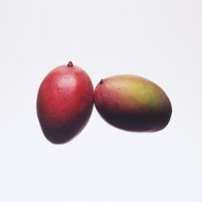

과실 (果實)이라고도 한다. 과육·과즙이 풍부하고 단맛이 많으며 향기가 좋다. 과일나무를 재배지역에 따라 온대과수와 열대과수로 분류한다. 과수를 재배하기 시작한 곳은 이집트·메소포타미아·중국의 세 지역으로, 약 5000∼6000년 전이다. 동아시아는 온대과수 지역으로 중국이 원산지인 종류가 많으며, 농경문화가 가장 먼저 발달한 황하유역에서 오과(五果:복숭아·배·매실·살구·대추) 및 감·밤·개암 등을 재배하였으며, 가공품으로도 이용하였다.
한국에서는 양사오문화[仰韶文化]·룽산문화[龍山文化]의 유입을 따라 과일나무가 전해졌을 것으로 추정한다. 복숭아·살구는 중국 허베이[河北]지방이 원산지인데 《산해경》에 복숭아의 재배기술과 대과종(大果種)의 품종에 관한 기록이 있다. 한국에서는 남부에 야생종이 있으나 대과종이 없는 것으로 보아 중국종이 주종을 이루었을 것이다. 《신당서》에 발해의 오얏·배 등이 소개되어 있고, 《고려사》 식화지(食貨志)에 배나무의 재배에 관한 기록이 있는데, 이때의 배는 야생의 돌배이다.